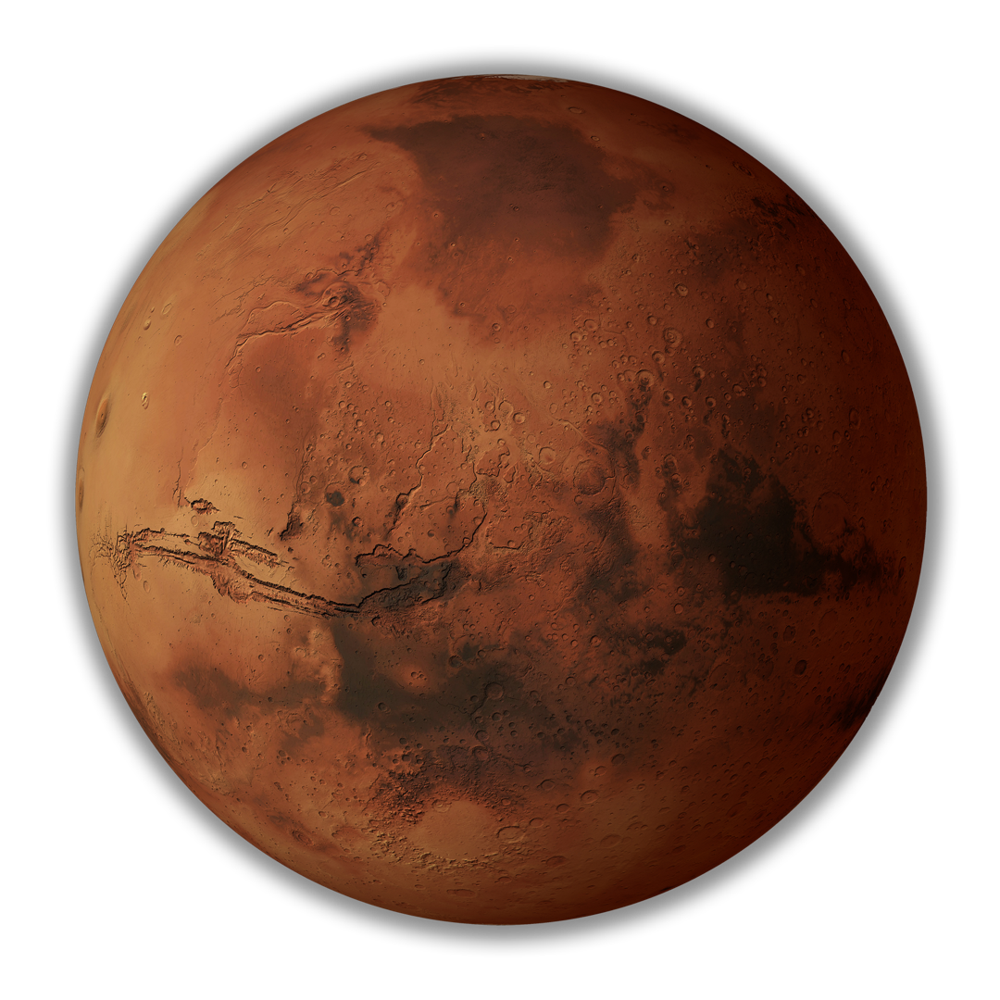

...Marte é o quarto planeta mais próximo do Sol e o segundo menor planeta do sistema solar, depois de Mercúrio, sendo consideravelmente menor que o planeta Terra. Marte é um dos planetas mais estudados do sistema solar. Podendo ser visto da Terra a olho nu, ou seja, sem auxílio de um telescópio.

. . . Marte é um planeta muito frio, árido e rochoso. A sua temperatura máxima é de aproximadamente 25°C, com uma média de -60°C, a qual pode chegar até cerca de -140°C durante à noite. Sendo um planeta terrestre (rochoso), suas camadas são compostas por atmosfera, crosta, manto e núcleo. A maioria das rochas na superfície é formada por basalto. Sua atmosfera é muito fina e é composta essencialmente de gás carbônico, embora exista em menor quantidade o nitrogênio, oxigênio, argônio, dentre outros gases.
. . . Possui dois satélites naturais, que são as "duas luas de Marte". Esses satélites foram descobertos em 1877 e muitos cientistas acreditam que podem ter sido asteroides capturados pela gravidade de Marte.
Voltar para o Sistema Solar